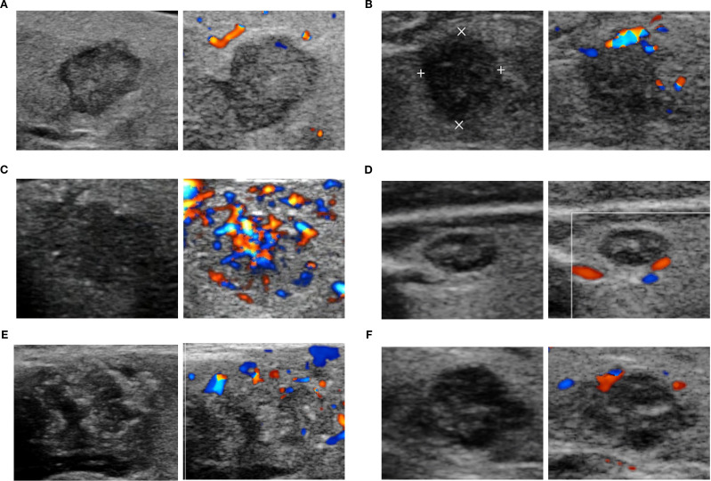

Ficha del catálogo
Nódulo tiroideo sospechoso
- Sistema
- Cabeza y cuello
- Modalidad
- US
- Región
- Cuello
- Dificultad
- Intermedio
Es una lesión focal de la glándula tiroides cuyas características ecográficas elevan la probabilidad de malignidad. Los nódulos tiroideos son muy prevalentes y en su gran mayoría benignos, por lo que el reto está en seleccionar cuáles requieren punción. El carcinoma papilar es la estirpe maligna más frecuente y suele tener buen pronóstico.
Técnica
El ultrasonido con transductor lineal de alta frecuencia es la técnica de referencia y permite caracterizar composición, ecogenicidad, forma, márgenes y focos ecogénicos. Se explora la glándula en planos transverso y longitudinal junto con todos los compartimentos ganglionares cervicales. La punción con aguja fina guiada por ultrasonido aporta el diagnóstico citológico.
Qué observar
- Composición sólida, quística o mixta del nódulo
- Ecogenicidad, prestando atención a la marcada hipoecogenicidad
- Orientación con eje anteroposterior mayor que el transverso
- Márgenes irregulares, lobulados o con extensión extratiroidea
- Microcalcificaciones como focos ecogénicos puntiformes sin sombra
- Ganglios cervicales anómalos con calcificaciones o degeneración quística
Hallazgos
El patrón de alta sospecha combina un nódulo sólido marcadamente hipoecoico, más alto que ancho, con márgenes irregulares o espiculados y microcalcificaciones puntiformes. La invasión de la cápsula tiroidea y los ganglios cervicales con hiperecogenicidad, calcificaciones o áreas quísticas refuerzan la sospecha. El componente espongiforme y la ecogenicidad conservada, en cambio, apuntan a benignidad.
Perlas
La decisión de puncionar depende del patrón ecográfico combinado con el tamaño, no del tamaño aislado: Un nódulo pequeño con rasgos de alta sospecha o con ganglios patológicos merece estudio citológico, mientras que uno grande y espongiforme puede seguirse con controles.
Diagnóstico diferencial
- Nódulo coloide benigno
- Es espongiforme o quístico con focos ecogénicos con artefacto en cola de cometa producido por el coloide.
- Tiroiditis de Hashimoto
- Hay heterogeneidad difusa con micronódulos y septos ecogénicos, sin lesión focal de márgenes definidos.
- Adenoma folicular
- Suele ser isoecoico con halo periférico fino y vascularización central, pero la distinción definitiva es histológica.
- Adenoma paratiroideo
- Se sitúa por fuera de la cápsula tiroidea, es marcadamente hipoecoico y se asocia a hipercalcemia.
Simuladores
- Coloide con artefacto en cola de cometa confundido con microcalcificación
- Esófago cervical o músculo largo del cuello adyacente al lóbulo izquierdo
- Área focal de tiroiditis que aparenta nódulo hipoecoico
Por modalidad
- TC
- Evalúa la extensión retroesternal, la compresión traqueal y la afectación ganglionar profunda del cuello.
- US
- Caracteriza el nódulo con detalle, estratifica el riesgo y guía la punción con aguja fina.
Protocolo
Ultrasonido con transductor lineal de doce megahercios o más, cuello en hiperextensión y barrido completo de ambos lóbulos e istmo en dos planos. Se miden los tres ejes del nódulo y se documenta su localización y patrón vascular con Doppler. Se explora de forma sistemática los compartimentos central y laterales del cuello.
Clasificación
Los sistemas de estratificación tipo TI-RADS asignan puntos a composición, ecogenicidad, forma, márgenes y focos ecogénicos, y combinan la puntuación con el tamaño para recomendar punción, seguimiento o alta. La citología se informa con el sistema de Bethesda en seis categorías que orientan el riesgo de malignidad y la conducta.
Errores frecuentes
- Indicar punción solo por el tamaño sin valorar el patrón ecográfico
- Confundir el artefacto en cola de cometa del coloide con microcalcificaciones
- No explorar los compartimentos ganglionares cervicales

tiroides nódulo TI-RADS microcalcificaciones punción ultrasonido carcinoma papilar